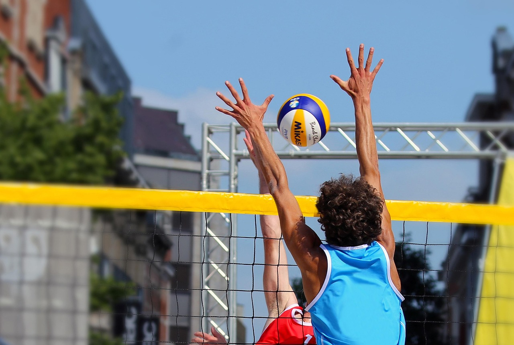

Sobre o Voleibol
Aprenda mais sobre o esporte
O voleibol é um esporte dinâmico e estratégico, jogado entre duas equipes, com uma bola e com as mãos, em uma quadra dividida por uma rede. O objetivo principal é lançar a bola por cima da rede e fazê-la tocar no chão do adversário, enquanto a equipe oposta tenta impedir esse movimento.
Cada equipe conta com seis jogadores titulares. Além do vôlei de quadra, há o vôlei de praia, jogado na areia com apenas dois atletas por equipe.
As regras do voleibol incluem a contagem de pontos, os sistemas de rotação e as infrações, como dois toques ou toque apoiado. O jogo é baseado em fundamentos essenciais, como saque, recepção, levantamento, ataque e bloqueio, que exigem técnica e trabalho em equipe.
Competições importantes como a Liga das Nações, os Jogos Olímpicos e os campeonatos mundiais reúnem as melhores seleções e promovem disputas de alto nível.
No Brasil, a Superliga é o principal campeonato de clubes, revelando talentos e proporcionando grandes jogos em todo o país.